Ik ben Kate. Ik zet semi-permanente make-up, doe nagels en wimpers en help je aan een gladde huid. Elke behandeling doe ik zelf, van je eerste berichtje tot de laatste touch-up.
WerkwijzeAlles eerst uitgetekendPas als jij ja zegt, begin ik.
Semi-permanente make-up
Geen potlood meer, geen uitgelopen eyeliner.
Hier ben ik het liefst mee bezig. Elke vorm teken ik eerst op je huid en we bekijken ze samen in de spiegel. Neem gerust foto's mee van wat je mooi vindt, dan zoeken we wat bij jouw gezicht past.
Powder brows geven een zacht poedereffect, zoals brows die je net hebt opgemaakt. Hair strokes en microblading tekenen haartjes na, voor wie het nog natuurlijker wil. Na 4 à 6 weken volgt een touch-up.
Een frisse kleur die je eigen lipvorm terug aflijnt en je lippen voller laat lijken. Ook mooi als je lippen bleek zijn geworden na fillers, of als ze van nature wat donker zijn.
2 à 5 jaar mooiNa fillers: 4 weken wachten
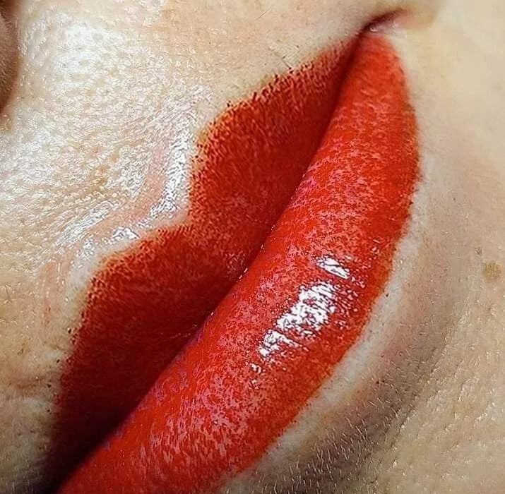
Baby lips03
Eyeliner
Eyeliner · Deepliner · Onderliner
Een deepliner zet ik net tegen je wimperrand. Je ziet geen streep, wel vollere wimpers en een open blik. Mag het wat meer zijn? Dan wordt het een echte eyeliner, zonder ooit nog uit te lopen.
1 à 2 jaar mooiLenzen? Breng een doosje mee
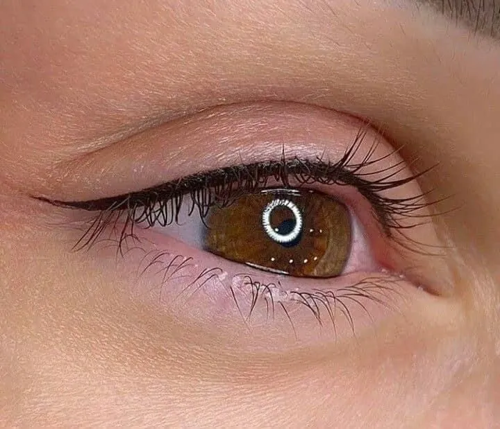
Eyeliner
Pigmenten volgens de EU-wetgeving. Zonder AZO, nikkel of zware metalen.
Niet als je zwanger bent, diabetes of kanker hebt, of Roaccutane neemt. Na Roaccutane wacht je minstens zes maanden.
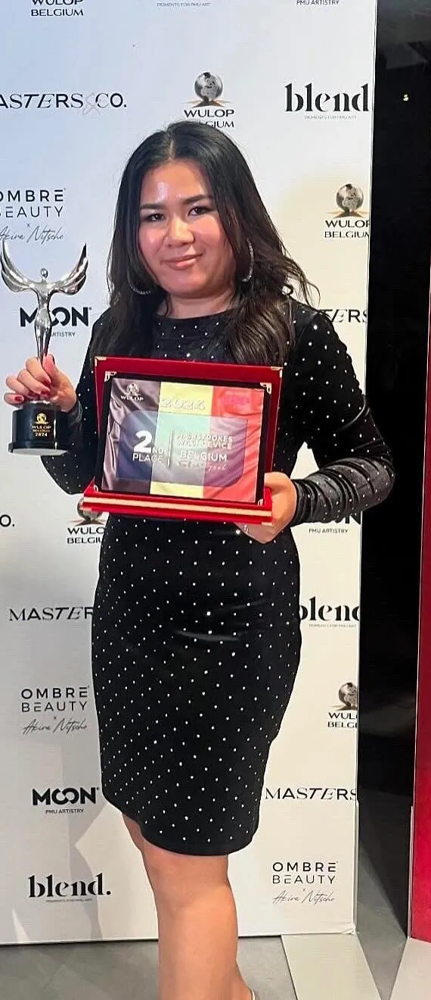
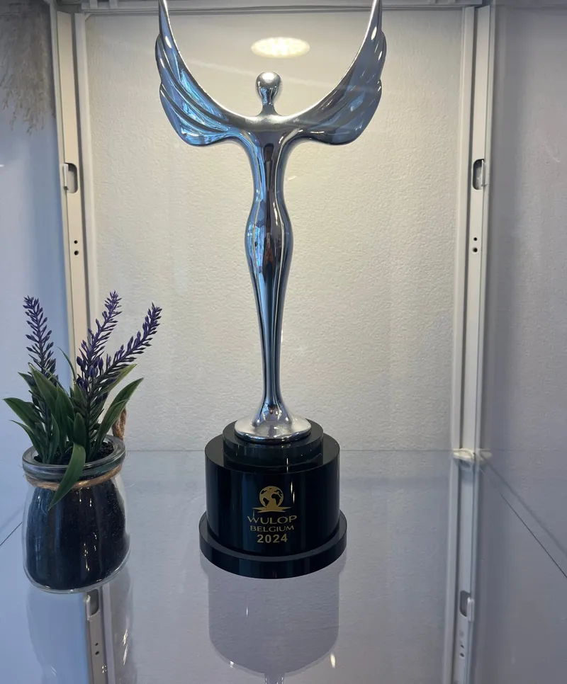
2e
Over Kate
Ik ben elke keer blij als ik mensen mooier en zelfverzekerder kan maken.
Op mijn achttiende stond ik al tussen de schoonheidsproducten, op de beautyafdeling van een supermarkt. Daarna leerde ik knippen en manicuren, en in 2014 opende ik mijn eerste eigen salon in Thailand. Semi-permanente make-up, wimpers en wax kwamen er later bij. Hier wilde ik gewoon blijven doen wat ik graag doe, en zo is deze studio er gekomen.
18 jaarBeautyafdeling, mijn eerste job
2014Eigen salon in Thailand
DaarnaPMU, wimpers en wax bijgeleerd
20242e plaats hair strokes op WULOP Belgium
KateIk werk alleen, dus je ziet bij elke afspraak hetzelfde gezicht.
Baby lips
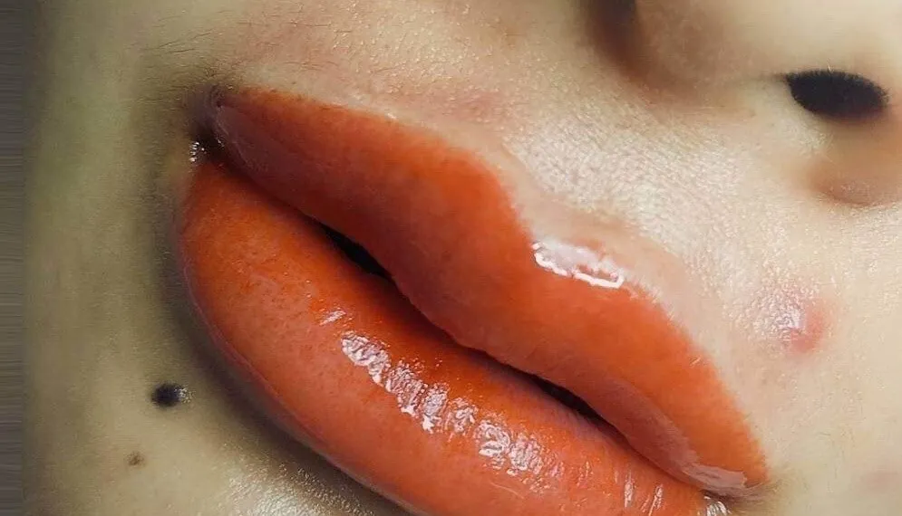
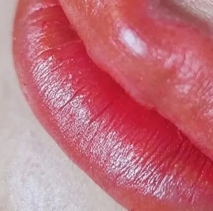
Lippen, de weken erna
Schrik niet op dag veertien.
Je lippen gaan door een paar fases voor de kleur echt zichtbaar wordt. Dat hoort erbij. Zo weet je op voorhand wat je mag verwachten.
Dag 1 tot 3Heel donkerFeller dan het eindresultaat.
Dag 4 tot 10BarstjesEr komen schilfers los. Niet aan krabben.
Dag 11 tot 28Kleur lijkt wegGeen paniek, ze zit eronder.
Dag 29 tot 55Ze komt terugKleur en vorm worden zichtbaar.
Dag 60KlaarJe ziet het echte resultaat.
Scrub je lippen de week ervoor om de dag zachtjes met wat honing en suiker en hou ze goed vet. Op droge, kapotte lippen kan ik niet werken.
Nagels · Wimpers · Waxing
En voor de rest van je lijstje.
Kom je voor je brows en wil je meteen je nagels laten doen? Dat kan gewoon. Alles gebeurt in dezelfde studio, door mij.
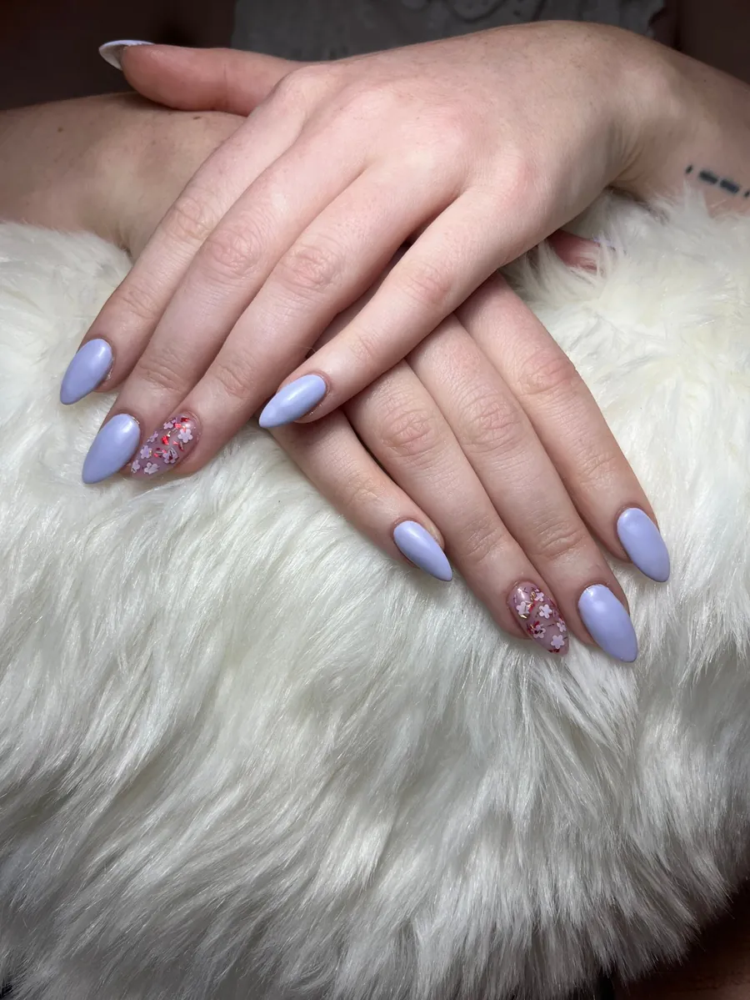
NagelsBIAB, gel, acryl of gellak op je eigen nagels.
Binnen de week een nagel kwijt?
Dan herstel ik hem gratis.
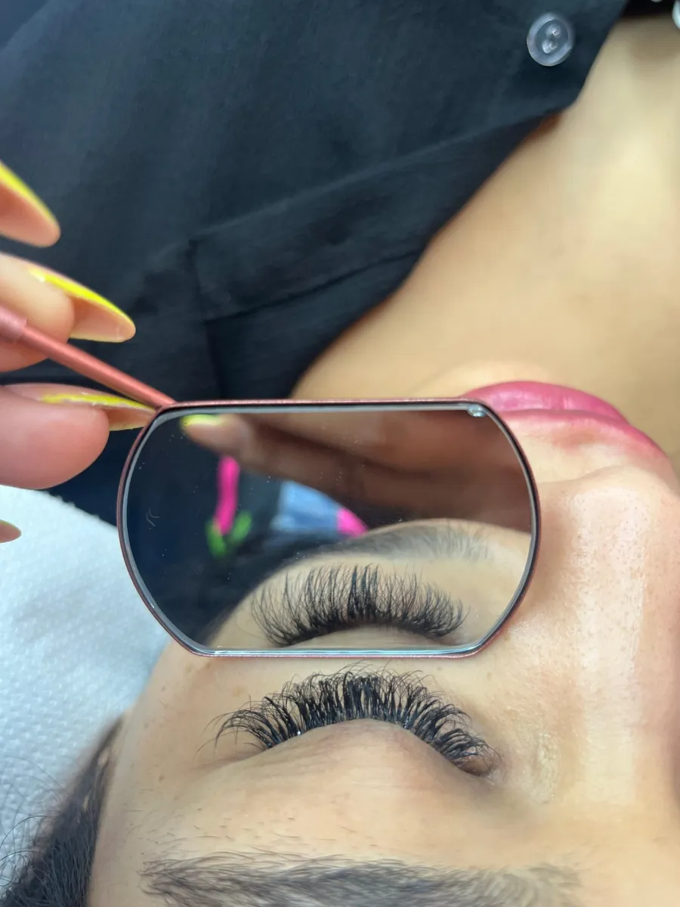
WimperextensionsClassic één voor één, light volume, Russian of hybrid. Bijwerken om de 2 à 3 weken.
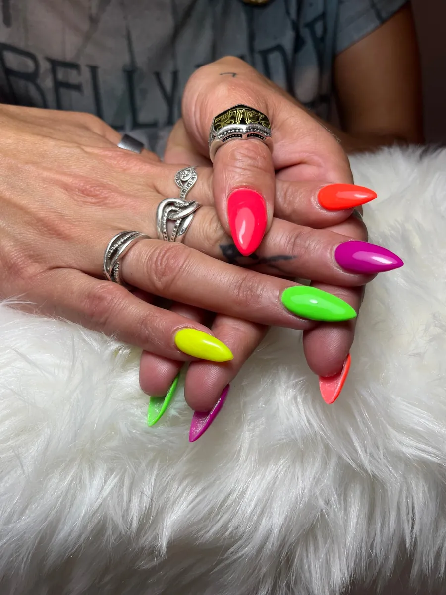
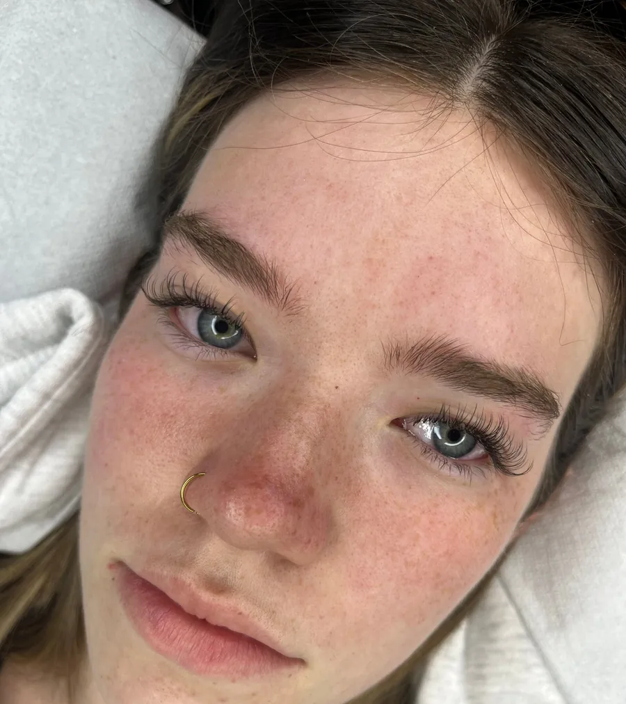
Nail art van je eigen foto
Stuur me het voorbeeld, ik zet het op je nagels.
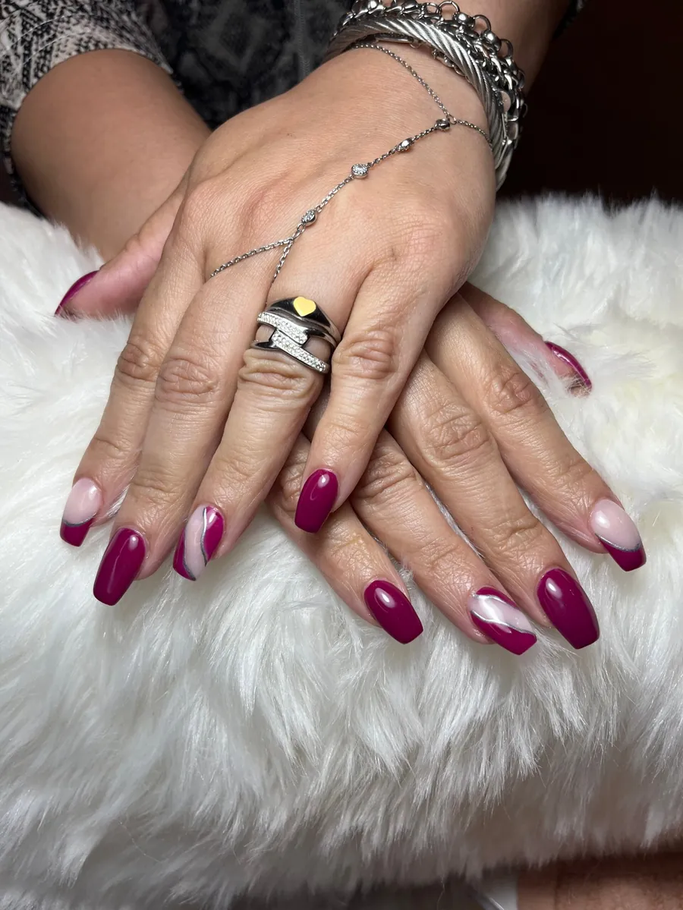
Waxing
Van een bovenlip tot je volledige benen. Voor vrouwen en mannen.
Gezichtwenkbrauwen, lip, kin
Lichaambenen, armen, rug
Intiembikini, Brazilian
Hollywoodalles weg
10'
Manicure en pedicure
Met scrub, masker en tien minuten hand- of voetmassage als je er een verwenmoment van wil maken.
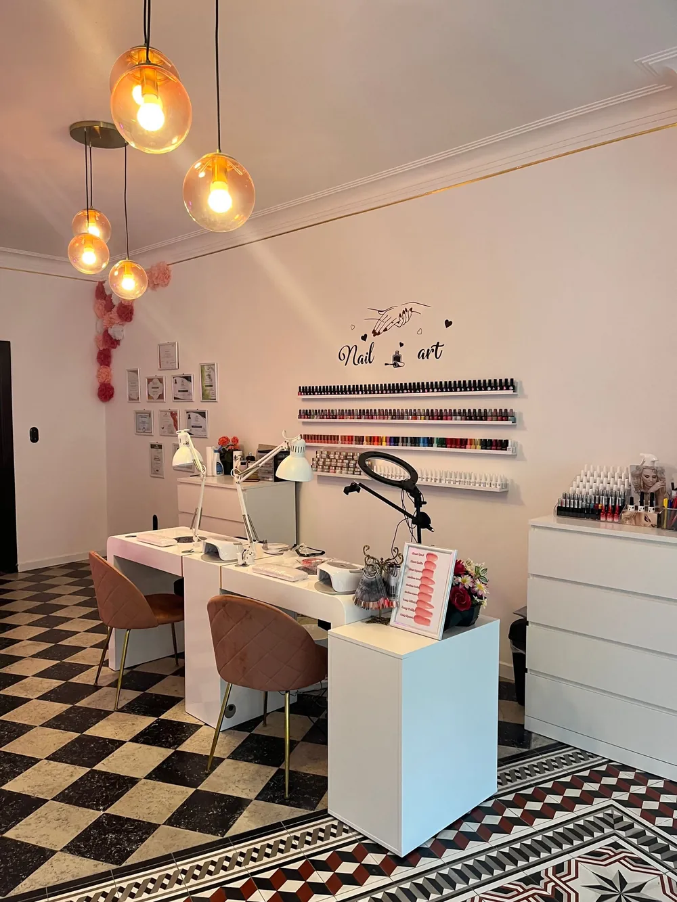
De studio
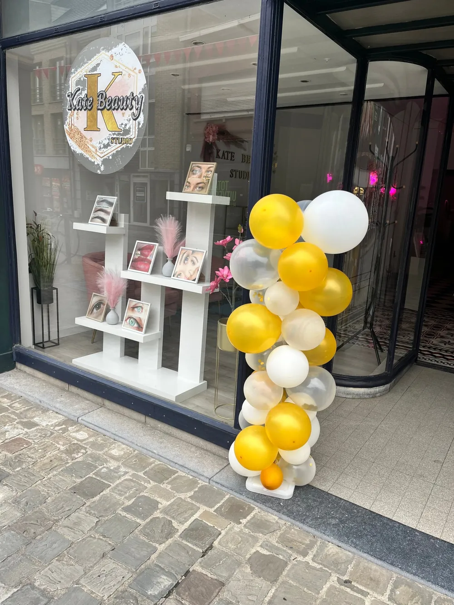
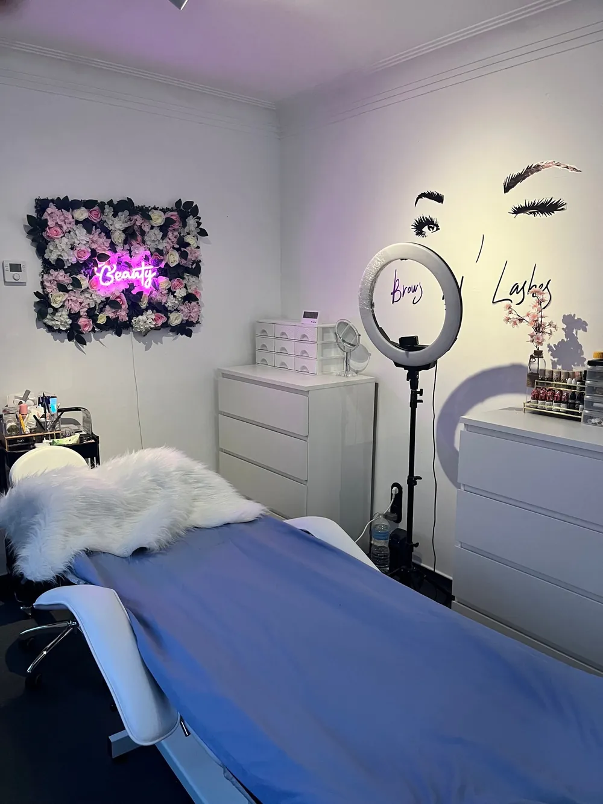
Afspraak maken
Stuur me gewoon een berichtje.
Omdat ik alleen werk, neem ik niet altijd op als ik met iemand bezig ben. Via WhatsApp lukt het het snelst, ik antwoord zodra ik kan.
Zeg wat je wil laten doen en wanneer het jou past. Een foto als voorbeeld mag altijd.
Voor afspraken vanaf € 25 vraag ik een voorschot van 50%. Zo blijft je plekje echt voor jou.
Toch verhinderd? Laat het minstens 24 uur op voorhand weten, dan krijg je je voorschot volledig terug.
Openingsuren
Maandag
9u tot 18u
Dinsdag
9u tot 18u
Woensdag
gesloten
Donderdag
9u tot 18u
Vrijdag
9u tot 18u
Zaterdag
9u tot 18u
Zondag en feestdagen
gesloten
Adres
Kate Beauty Studio Zandstraat 84 2200 Herentals Plan je route